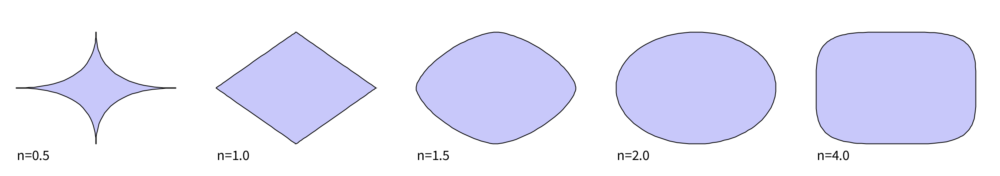

This project involves creating pathways from parametric equations. They can be used to build interesting shapes or moving trajectories along those pathways.
Consider the equation of a circle of radius r centred at position (0,0):
x2 + y2 = r2
Expressed in this form it allows us to answer the question Does a point (x,y) sit on the circumference of
a circle of radius r? (the answer being yes if x-squared plus y-squared is equal to r-squared, or no
if not). But when it comes to plotting that circumference it is more useful to ask what are the pairs of
coordinates (x,y) that make up the boundary of the circle? We can answer such a question by
re-expressing it as a pair of parametric equations that are each function of some parameter t:
x(t) = r.cos t
y(t) = r.sin t
This is much easier to convert directly into Processing code to draw the circle, where we increment parameter t from 0 to 2π (TAU) and calculate the x and y coordinates of the circle from each value of t:
void setup() {
size(300, 300);
}
void draw() {
background(255);
fill(200, 200, 250);
translate(width/2, height/2); // Make (0,0) centre of sketch.
float r = 100; // Radius of circle
beginShape();
for (float t=0; t<TAU; t+=0.01) {
float x = r*cos(t); // Parametric equations.
float y = r*sin(t);
vertex(x, y); // Add point to shape.
}
endShape(CLOSE);
}
Of course if we just wished to draw a circle, we could simply call Processing's circle() method. But this approach allows us to do more interesting things if we vary the parametric equations. Here are a few examples to provide ideas for a project:
The parametric equations of an ellipse with axes of length a and b are given by:
x(t) = a.cos t
y(t) = b.sin t
But we can generalise to create the equations of a superellipse:
x(t) = a.sgn(cos t).|cos t|2/n
y(t) = a.sgn(sin t).|sin t|2/n
where n determines the type of Minkowski distance that typically varies between 1 and 5 (but can be higher or
lower); |x| means the absolute
value of x (ignores any minus sign) and sgn x is the sign of x: -1 if negative, +1 if
positive or 0 if 0.
Varying t from -π to π in small increments, we get the following shapes for various values of n. When n > 2, the shapes are called superellipses. When n is around 4 or 5 and the radii a and b are equal we get what is sometimes pleasingly called a 'squircle' (half way between a square and a circle), something that Apple use a lot in their designs.
Could you draw some superellipses for your project? Could you control n interactively or change as a function of t? Could you make the shape 'squish' as an animation? How about incorporating colour or randomness to make things more interesting?
If you'd like to find out more about superellipses, squircles, cirares, their areas and perimeters, see this entertaining video by standup mathematician Matt Parker. Perhaps that might inspire you to see if you can get Processing to calculate the area of a squircle.
These are parametric curves like the ellipse but values of t are out of phase for the x and y
equations. This can be represented by multiplying t by constants k1 and k2
respectively for each equation:
x(t) = a.cos(k1.t)
y(t) = b.sin(k2.t)
Can you create some lissajous figures? Can you make the parameters k1 and k2 dependent on the mouse position or some other form of interaction? Can you animate a ball along the trajectory of the lissajous curve?
There is no limit on the possible parametric equations you could create.
Try creating your own to draw.
Here, for example are some with the following form:
x(t) = r.(cos t - cos3(a.t))
y(t) = r.(sin t - sin3(b.t))
for various values of a and b: